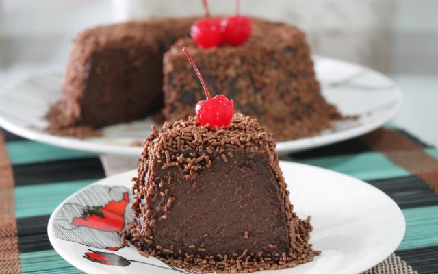

Início
Brigadeirão

Descrição
brigadeirão é uma receita muito gostosa e simples de se fazer!
venha sentir o prazer de construir um brigadeirão em sua cozinha.
Ingredientes (8 porções)
- 200g de chocolate em pó
- 4 ovos
- 2 latas de leite condensado
- 1 lata de leite de vaca (use a lata de leite condensado como medida)
- 1 colher de manteiga
- açúcar suficiente para polvilhar a forma
Preparo
- bata o leite condensado, o leite de vaca, a manteiga, o chocolate em pó e os ovos no liquidificador
- unte uma forma com buraco no meio e polvilhe com açucar
- coloque a mistura liquidificada na forma e leve ao forno para assar em banho-maria por mais ou menos 1 hora, a 150ºc.